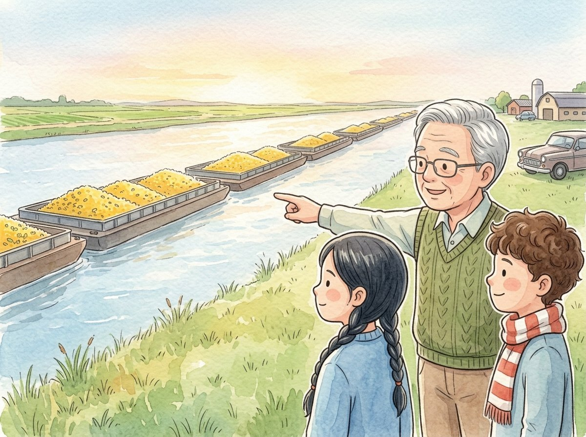

Grade 2 · Social studies · SS.2.G.3
A trip across Illinois
A story about how the place where we live shapes the work we do.
Key words you will learn
Tap a green word to see what it means.
The story
During vacation, Grandpa took Lucía and Israel on a car trip across Illinois. "Let's discover how the nature of each place shapes the work of its people," he said.
Their first stop was Lake Michigan, in Chicago. They saw big ships coming into a , a place on the shore where ships load and unload goods. On the beach, families from other cities were strolling. "That is ," said Grandpa, "traveling to see and enjoy a place. Many people work taking care of tourists."
"The lake is a ," Grandpa explained. "A natural resource is something from nature that people use, like water, land, or trees."
Next, they drove to the middle of the state. The view changed: the land was flat and dark, and there were cornfields as far as they could see. "This land has , full of what plants need to grow," said Grandpa. "That is why so many people here are farmers."
"Like my cousin Tomás's dad!" said Israel.
Their last stop was the bank of the Mississippi River, one of the biggest rivers in the country. A very long line of was moving along the water. Barges are flat boats that carry heavy loads. They were carrying corn and soybeans from the farms to other places.
On the way home, Lucía made a chart in her notebook. By the lake: ports and tourism. On the rich land: farms. By the river: moving the crops. "Each depends on what the place is like," she said. An economic activity is work that produces goods or services.
Grandpa smiled in the car mirror. "Exactly," he said. "The nature of a place and the work of its people always go hand in hand."
Glossary
- port
- A place on the shore of an ocean, lake, or river where ships load and unload goods.
- tourism
- Traveling to see and enjoy a place. It is also the work of taking care of travelers.
- natural resource
- Something from nature that people use, like water, land, or trees.
- rich soil
- Soil that is full of what plants need to grow well. It is also called fertile soil.
- barge
- A flat boat that carries heavy loads on rivers.
- economic activity
- Work that produces goods or services, like farming, fishing, or moving goods.
Questions
Choose the correct answer. If you make a mistake, the story shows you where the answer is.
-
Question A. What is a natural resource?
A natural resource is something from nature that people use, like the water in the lake.
-
Question B. Why are there so many farmers in the middle of Illinois?
The land in the middle of Illinois has rich soil, so many people work on farms.
-
Question C. What were the barges on the Mississippi carrying?
The barges were carrying corn and soybeans from the farms to other places.
-
Question D. What did Lucía discover with her chart?
Lucía discovered that each economic activity depends on what the place is like.